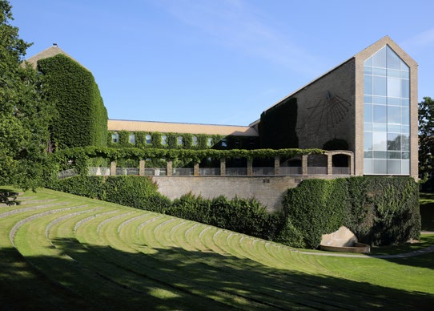
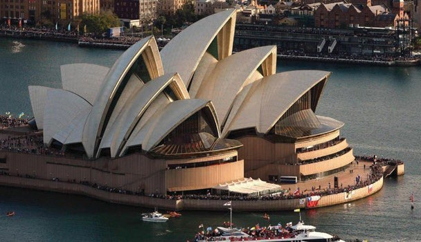
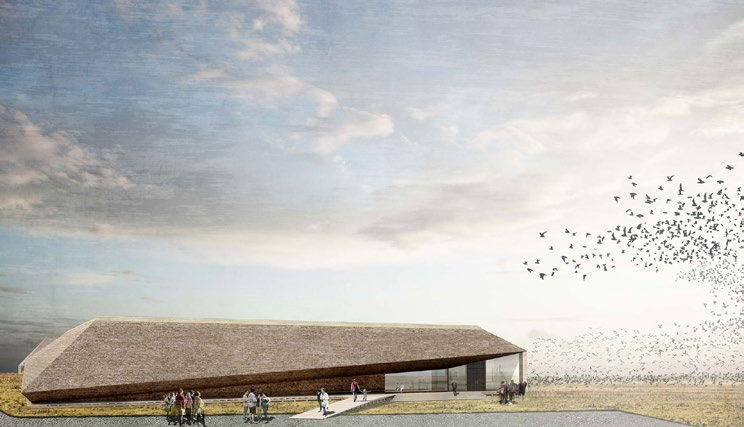

5.5 – ARKITEKTUR OG DESIGN
sidde 161
Arkitektur og design afspejler altid et samfunds muligheder, holdninger og værdier, og er med til at gøre et land genkendeligt. I Danmark er der tradition for at lægge vægt på hensyn til praktiske funktioner og på enkelhed. Det ser man allerede i de mange landsbykirker og bindingsværksgårde, som gennem flere århundreder frem til midten af 1800-tallet blev opført på bakketoppe og i landskabet rundt om i landet. Det er også kendetegnende for de mere eksklusive ejendomme, som efter inspiration fra græsk og romersk arkitektur blev opført i perioden cirka 1760-1860, og som især kom til at præge bybilledet i Køben havn. Et eksempel er Københavns domkirke, Vor Frue Kirke, som er tegnet af C.F. Hansen (1756-1845). Den blev opført i årene 1811-29. Dele af domkirken har form som et romersk tempel, mens indgangen er formet som en græsk tempelfront.
I dag forbindes dansk arkitektur og design især med funktionalismen, som er en måde at formgive på, hvor man især lægger vægt på praktiske funktioner. Funktionalismen opstod i 1920’erne, hvor den først og fremmest var med til at forbedre byernes dårlige boligstandard. I de efterfølgende mange årtier kom funktionalismen i arkitekturen til at præge opbygningen og udformningen af den danske velfærdsstat, for eksempel mange danskeres boliger.
Én af funktionalismens idéer var, at hvis man fjernede ornamenter (udsmykninger) fra for eksempel huse og møbler og gjorde dem mere ens og enkle i udtrykket, så reducerede man også deres tilhørsforhold til bestemte klasser i samfundet. Funktionalismens politiske dagsorden var ønsket om mere social lighed.
På den måde er funktionalismen blevet et udtryk for den brede danske middel klasse og dens moderne livsstil.
Et eksempel på funktionalisme er Aarhus Universitet, som blev opført i 1931-33. Ideen bag universitetet var at skabe en form for akademisk landsby præget af åbenhed og harmoni, samt ønsket om at integrere universi tetets mange formål i en helhed. I Universitetsparken ligger således de bygninger, der huser de enkelte institutter som for eksempel jura, historie, musik og statskundskab. Men parken rummer også kolle gier, en sø og vandløb.Aarhus Universitet og universitetsparken. Foto: Villy Fink Isaksen.
Aarhus Universitet og universitetsparken. Foto: Villy Fink Isaksen.
Læremateriale Til Indfødsretsprøven

sidde 162
Andre eksempler på funktionalisme er Poul Henningsens lamper og Børge Mogensens møbler. Poul Henningsen (1894-1967), også kaldet PH, var både samfundsdebattør, revy forfatter, filmproducent og arkitekt, men blev mest kendt for sit lampedesign, som gjorde det elektriske lys blændfrit. Lampen består af tre skærme, hvis størrelser, materialer og farver kan kombineres i talrige variationer, sådan at lampen skaber en både behagelig og praktisk belysning til forskellige formål og priser. PH Lampe tegnet af Poul Henningsen.
PH Lampe tegnet af Poul Henningsen. I 1940’erne udviklede Børge Mogensen (191472) et funktionalistisk præget møbelprogram for supermarkedskæden FDB (nuværende Coop), der var tilsvarende fleksibelt og ligeledes kom til at præge såvel danske hjem som rådhuse, skoler og sygehuse med et enkelt udtryk.
Arne Jacobsen (1902-71) har også sat stort præg på både arkitektur og design. Han var inspireret af flere forskellige stilarter – ikke mindst funktionalismen. Eksempler på hans arkitektur er Danmarks Nationalbank i København og Aarhus Rådhus. Eksempler på hans design er stolene 7’eren, Ægget samt Stelton kaffeog tekanderne og andet køkken- og serveringsudstyr.
Dansk arkitektur og design er i dag præget af stor mangfoldighed og globalt udsyn. Arkitekten Jørn Utzon (1918-2008) var en foregangsmand for denne udvikling, da han i slutningen af 1950’erne tegnede det ikoniske operahus i Australiens største by Sydney. Bygningen er udformet som store opretstående skaller beklædt med et mønster af hvide klinker. Den kan fra forskellige vinkler minde om for eksempel en katedral, sejl på et skib eller havets bølger.Operahuset i
Operahuset i Sidney tegnet af Jørn Utzon.
Læremateriale Til Indfødsretsprøven

sidde 163
Hermed blev vejen banet for en mere eksperimenterende, ekspressiv og legende byggestil, som har mødt stor international anerkendelse. Aktuelt videreføres den blandt andet af Dorte Mandrup (født 1961), som står bag byggerier som Isafjordcenteret ved Ilulissat-fjorden i Grønland og Vadehavscentret i Ribe. Dorte Mandrups stil er kendetegnet ved, at omgivelserne inspirerer og former bygning erne. Både Isafjordcenteret og Vadehavscenteret spiller tydeligt sammen med landskabernes særlige kendetegn og historie.Vadehavscenteret tegnet af Dorte Mandrup. Fot
Vadehavscenteret tegnet af Dorte Mandrup. Foto: Nationalpark Vadehavet.
Videre har arkitekten Bjarke Ingels (født 1974) og hans tegnestue BIG (Bjarke Ingels Group) tegnet flere prestigebyggerier både i Danmark og udlandet. Det gælder for eksempel Amager Bakke, også kaldet Copenhill, der blev indviet i 2019. Den fungerer både som energieffektiv affaldsforbrænding og rekreativ oase med skibakke, vandrerute og klatrevæg.
Læremateriale Til Indfødsretsprøven

Fonte: Læremateriale til Indfødsretsprøven, SIRI.